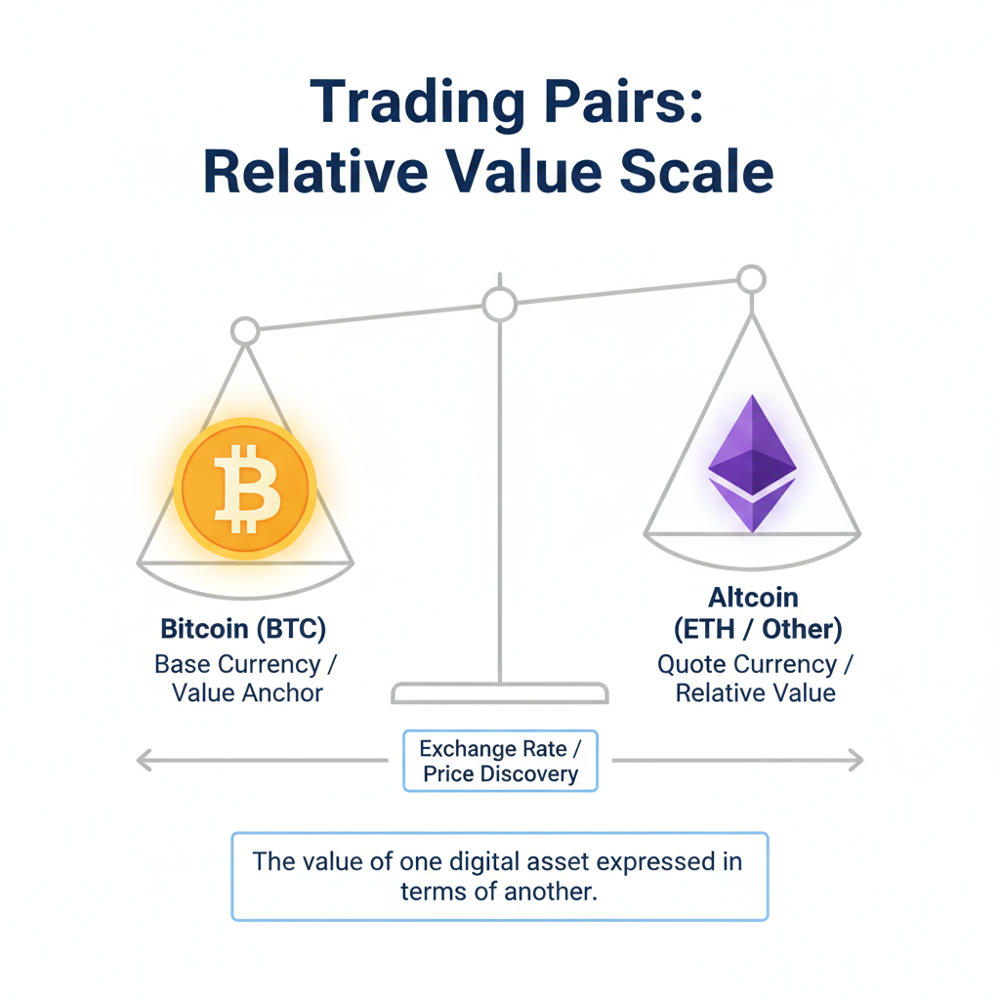
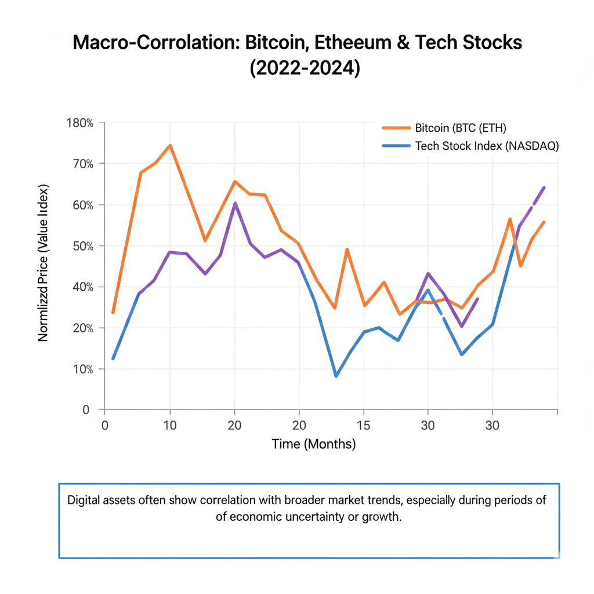

One of the most striking observations for anyone entering the world of digital assets is the tendency for the entire market to move as a single unit. On many days, a glance at a price dashboard reveals a sea of green or a wall of red. When Bitcoin experiences a significant price shift, it often seems as though hundreds of smaller altcoins follow its lead within minutes, if not seconds. This phenomenon can be confusing for those coming from the traditional stock market, where individual company news often causes stocks to move independently of one another.
Understanding why crypto prices move together requires a deep dive into the underlying architecture of the digital asset ecosystem. It is not a coincidence or a glitch; rather, it is the result of how these assets are traded, how liquidity is structured, and how human psychology interacts with a relatively young asset class. By exploring the concept of correlation, we can begin to see the invisible threads that connect a diverse range of projects—from decentralized finance protocols to digital collectibles—to the broader market trend.
This article will deconstruct the mechanics behind this unified movement. We will examine the role of Bitcoin as the market's primary benchmark, the impact of trading pairs, the influence of automated trading algorithms, and the psychological factors that drive investors to treat different assets as part of a single risk bucket. Whether you are a beginner looking to understand your first portfolio or an intermediate learner seeking to grasp market dynamics, this guide provides a clear foundation for why crypto correlation is so prevalent.
Table of Contents
What Exactly is Crypto Correlation?
In statistics, correlation is a measure of how two variables move in relation to each other. In the context of financial markets, it describes the degree to which two assets move in the same direction at the same time. If two assets have a high positive correlation, they tend to rise and fall together. When we talk about why crypto prices move together, we are essentially discussing the high positive correlation that exists across the vast majority of the cryptocurrency market.
This correlation is often measured on a scale from -1 to +1. A score of +1 means the assets move in perfect lockstep, while a score of -1 would mean they move in exactly opposite directions. Historically, many cryptocurrencies have maintained a correlation coefficient with Bitcoin that exceeds 0.7 or 0.8, which is considered very high. This means that for the majority of trading sessions, the direction of the market is dictated by a few major players, with others following suit.
It is important to note that correlation does not necessarily mean the assets are identical in value or purpose. A high-utility blockchain platform and a speculative asset with no utility might both drop 10% on the same day. This happens because, in the eyes of the broader market and the systems that facilitate trading, they are often categorized within the same risk profile. (This concept connects with Risk Management Fundamentals)
Bitcoin as the Market Gravity
To understand crypto correlation explained simply, one must first recognize the sheer "gravity" of Bitcoin. As the first and largest cryptocurrency by market capitalization, Bitcoin often acts as the primary gateway for capital entering the space. It is the most recognizable asset and usually the first one that institutional and retail investors purchase. Because it commands such a significant portion of the total market value—a metric often referred to as Bitcoin Dominance—its movements set the tone for the entire ecosystem.
When Bitcoin's price rises, it often signals a "risk-on" environment where investors feel confident. This confidence spills over into smaller assets, as investors look for higher potential returns in "altcoins." Conversely, when Bitcoin falls, it often triggers a flight to safety. Since Bitcoin is perceived as the safest or most established asset in the crypto space, a decline in its price suggests that the entire sector may be under pressure, leading investors to sell off their more speculative holdings first.
The relationship between Bitcoin and altcoins is the cornerstone of why crypto prices move together. Bitcoin is essentially the S&P 500 of the crypto world. Just as a major drop in a primary stock index can drag down shares of unrelated companies, Bitcoin's volatility creates a ripple effect that touches every corner of the digital asset market. (This concept connects with Market Benchmarks)
The Role of Trading Pairs and Liquidity
A technical but crucial reason for market-wide movements is the structure of trading pairs. In traditional finance, most people buy stocks using a national currency like the U.S. Dollar. In the crypto world, however, many assets are not just traded against the dollar; they are traded against Bitcoin (BTC) or Ethereum (ETH).
Consider a BTC/ALT trading pair. If the value of Bitcoin drops significantly against the dollar, the price of the altcoin in that pair is mathematically impacted. If traders want to maintain a certain value relative to Bitcoin, they may sell the altcoin when Bitcoin falls. This creates a mechanical link between the two assets. Even though stablecoin pairs have become more common, the legacy of BTC-based trading pairs still exerts a powerful influence on price movements.
Liquidity in crypto markets also plays a major role. Liquidity refers to how easily an asset can be bought or sold without affecting its price. Many smaller cryptocurrencies have relatively low liquidity. When the market turns bearish and a few large players decide to exit their positions, there may not be enough buyers to absorb the sell orders. This causes the price to drop rapidly. Because large investors often hold a basket of different assets, when they decide to reduce their exposure to crypto, they sell many different coins at once, causing a simultaneous decline. (Learn more in our guide on Liquidity in Crypto Markets)
Market Sentiment and Collective Psychology
The cryptocurrency market is heavily driven by market sentiment crypto. Unlike traditional companies that have quarterly earnings reports and physical assets, the value of many crypto projects is driven by network effects, adoption, and—most importantly—speculation. In an environment driven by speculation, human psychology becomes a primary mover of prices.
Investors often view cryptocurrency as a single asset class. When there is negative news regarding regulation, a security breach on an exchange, or a change in global economic policy, many investors do not stop to ask if the news affects their specific project. Instead, they react to the vibe of the market. This herd mentality leads to collective buying during periods of euphoria and collective selling during periods of panic.
This psychological behavior is amplified by the 24/7 nature of the crypto market. There are no market close periods to allow for calm reflection. This constant stream of data can lead to heightened emotional responses. When one major asset starts to slide, the fear of a market-wide crash often becomes a self-fulfilling prophecy, as traders sell their entire portfolios to protect their capital, ensuring that all prices move down together.
The Impact of Algorithmic Trading and Bots
In the modern era, a significant portion of crypto trading volume is generated by automated systems rather than human beings. These algorithmic trading bots are programmed to react to specific triggers. Many of these bots are designed to follow Bitcoin's price movement. For example, a bot might be programmed to sell an altcoin if Bitcoin drops by more than a certain percentage in a short timeframe.
Because thousands of bots may be running similar strategies, the reaction to a price move in Bitcoin is instantaneous and widespread. This explains why the lag between a Bitcoin move and an altcoin move has diminished over the years. Arbitrage bots also contribute to this. If an asset's price stays high on one exchange while the rest of the market is falling, arbitrage bots will quickly sell the asset on that exchange to profit from the difference, effectively pulling the price down to match the broader market trend.
These automated systems prioritize speed over fundamental analysis. They do not care about the long-term vision of a project during a high-volatility event. Their goal is to manage risk or capture small price discrepancies, and their collective action reinforces the bitcoin altcoin correlation by forcing prices back into alignment with the market leader.
Macroeconomic Factors and Global Liquidity
While the internal mechanics of the crypto market are important, we must also look at the outside world. In recent years, cryptocurrency has become increasingly integrated into the global financial system. As institutional investors—such as hedge funds and public companies—have added crypto to their balance sheets, the asset class has become more sensitive to macroeconomic factors.
Changes in interest rates, inflation data, and geopolitical events now move crypto prices in a way that is similar to tech stocks. When central banks signal a change in monetary policy, it affects global liquidity. If liquidity dries up because borrowing becomes more expensive, investors tend to pull back from risky assets across the board. In this scenario, crypto is often treated as a single block of risk.
This is why you might see Bitcoin, Ethereum, and major stock indexes all falling on the same morning after a major economic announcement. The correlation is no longer just internal to crypto; it is part of a broader global risk-on/risk-off cycle. As long as the majority of market participants view crypto as a unified high-risk category, these assets will continue to move in tandem during major economic shifts.
Key Takeaways
- Market Benchmarks: Bitcoin acts as the primary barometer for the crypto market; its movements set the directional trend for almost all other assets.
- Trading Pairs: Many assets are traded directly against Bitcoin, creating a mechanical mathematical link between their valuations.
- Psychological Clustering: Investors often view crypto as a single asset class, leading to herd behavior and collective price movements during news events.
- Algorithmic Enforcement: Automated trading bots are often programmed to follow Bitcoin, which accelerates and reinforces market-wide correlation.
- Macro Trends: In a globalized economy, crypto is often categorized as a high-risk asset, causing it to move in sync with other speculative markets like tech stocks.
Conclusion
The unified movement of the cryptocurrency market is a byproduct of its unique birth and rapid evolution. While it may seem illogical for a project with strong fundamentals to fall simply because another asset is struggling, the reality of trading pairs, algorithmic speed, and collective investor psychology creates an environment where independence is rare. This interconnectedness is a defining characteristic of the current digital asset landscape.
As the market matures and more assets develop distinct use cases and institutional support, we may eventually see "decoupling"—periods where individual assets move based purely on their own merits. However, for the foreseeable future, Bitcoin remains the center of the crypto universe, and its gravitational pull will continue to dictate the ebb and flow of the broader market. Understanding these connections is not about predicting the next move, but about recognizing the structural forces that make the market move as one.
Educational Disclaimer:
This article is for educational and informational purposes only and should not be considered financial or investment advice. Investing involves risk.